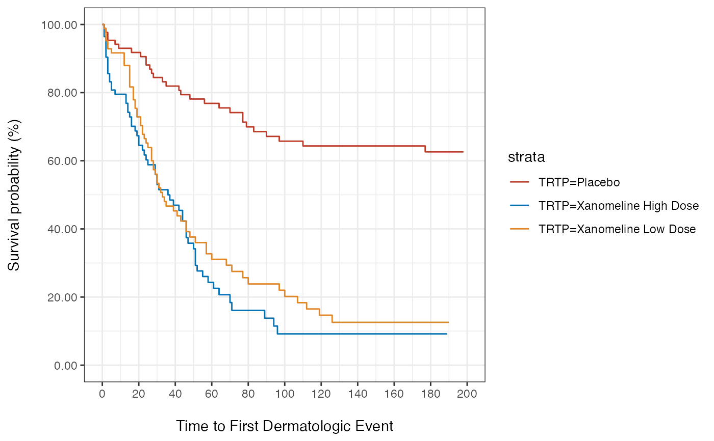
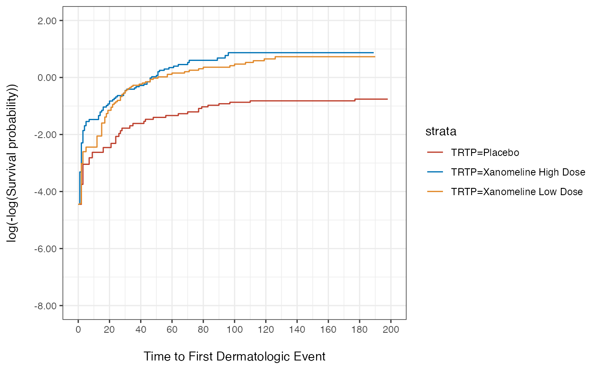

S3 method for creating plots directly from objects using ggplot2, similar to base plot function.
The default method is base::plot.
plot(x, ...) # S3 method for default plot(x, ...) # S3 method for survfit plot( survfit_object = NULL, y_label = NULL, x_label = NULL, x_units = NULL, x_ticks = NULL, y_ticks = NULL, fun = "surv", legend_position = "right" )
Arguments
| x | object to be passed on to the method |
|---|---|
| ... | other arguments passed on to the method |
| survfit_object | Object of class |
| y_label |
|
| x_label |
|
| x_units | Unit to be added to the x_label (x_label (x_unit)). Default is NULL. |
| x_ticks | Ticks for the x-axis. When not specified, the default will do a proposal. |
| y_ticks | Ticks for the y-axis. When not specified, the default will do a proposal based on the |
| legend_position | Specifies the legend position in the plot. Character values allowed are "top" "left" "bottom" "right". Numeric coordinates are also allowed. Default is "right". |
Value
Object of class ggplot ggsurvplot.
See also
Examples
library(survival) library(dplyr) library(tidyr) library(ggplot2) survfit_object <- estimate_KM(data = adtte, strata = "TRTP") ## Plot survival probability plot(survfit_object = survfit_object, fun = "surv")plot(survfit_object, fun = "pct")## Plot cumulative hazard plot(survfit_object, fun = "cloglog")